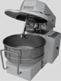
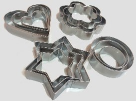
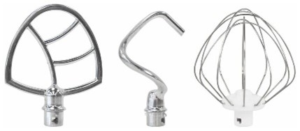

Тема:
Технология изготовления песочного полуфабриката
#Технология изготовления песочного полуфабриката
Интерактивный тренажер по выполнению заданий
Задание:
Необходимо выбрать два и более верных ответов из предложенных вариантов:
Необходимо выбрать два и более верных ответов из предложенных вариантов:
110
08:54
1 Разделка теста на куски, взвешивание
2 Подготовка ингредиентов
3 Выпечка
4 Формование изделий
5 Закладывание муки, замес теста
6 Охлаждение
7 Перемешивание до однородной массы
2 Подготовка ингредиентов
3 Выпечка
4 Формование изделий
5 Закладывание муки, замес теста
6 Охлаждение
7 Перемешивание до однородной массы
А Песочный полуфабрикат нерассыпчатый, плотный, жесткий
Б Тесто непластичное, при раскатке крошится
В Изделия грубые, крошливые. Песочный полуфабрикат очень рассыпчатый
Г Песочный полуфабрикат сырой, плохо пропеченный, местами подгорелый
Д Песочный полуфабрикат бледный
Б Тесто непластичное, при раскатке крошится
В Изделия грубые, крошливые. Песочный полуфабрикат очень рассыпчатый
Г Песочный полуфабрикат сырой, плохо пропеченный, местами подгорелый
Д Песочный полуфабрикат бледный
1. Мука с большим содержанием клейковины;
2. Завышена температура выпечки;
3. Низкая температура выпечки;
4. Температура теста выше 20ºС;
5. Уменьшено содержание жира;
6. Увеличено содержание жира;
7. Тесто замешено с растопленным маслом;
8. Неравномерно раскатан пласт;
9. Вместо яиц добавлены яичные желтки.
2. Завышена температура выпечки;
3. Низкая температура выпечки;
4. Температура теста выше 20ºС;
5. Уменьшено содержание жира;
6. Увеличено содержание жира;
7. Тесто замешено с растопленным маслом;
8. Неравномерно раскатан пласт;
9. Вместо яиц добавлены яичные желтки.
С какими показателями клейковины следует использовать муку для замеса песочного теста:


Какой продукт не входит в состав песочного теста?
А) бисквитное тесто;
Б) заварное тесто;
В) дрожжевое тесто;
Г) песочное тесто.
Б) заварное тесто;
В) дрожжевое тесто;
Г) песочное тесто.
1) химическое разрыхление;
2) биологическое разрыхление;
3) комбинированное разрыхление;
4) механическое разрыхление.
2) биологическое разрыхление;
3) комбинированное разрыхление;
4) механическое разрыхление.

Назовите температуру выпечки мелкоштучных изделий из песочного теста:
Вы набрали 0 баллов
Вернуться на главную страницу